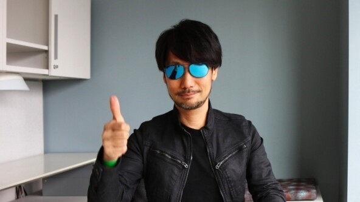
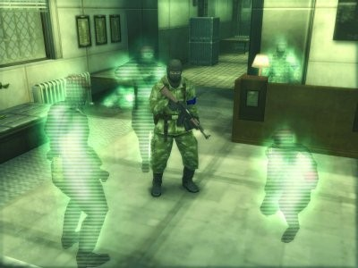
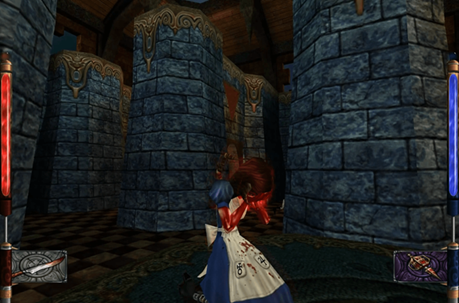
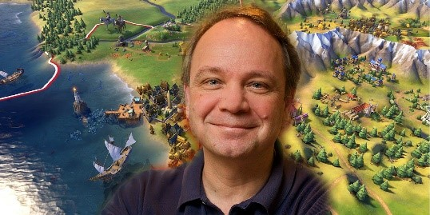
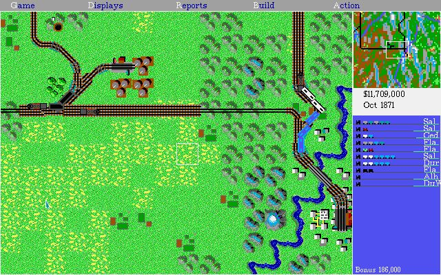
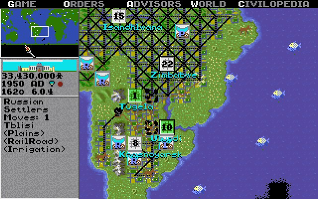

Гении геймдизайна: Как начинался их путь к успеху
Хидэо Кодзима
Одно из самых громких имен в игровой индустрии – Хидэо Кодзима, к которому прикрепилось прозвище гений. Проекты Кодзимы, такие как Metal Gear Solid, сочетают сложные сюжет с философскими темами.
Краткая биография
Хидэо Кодзима родился 24 августа 1963 года в Токио, младшим из трёх детей, но в возрасте около четырёх лет переехал с родителями в Осаку. Отец Хидэо умер, когда ему было 13.
Кодзима упоминал, что по мере взросления не было никого, кто бы присматривал за ним после школы. Время, проводимое дома в полной изоляции и одиночестве, оставило свой след
Хидео Кодзима, изучавший экономику в Университете Осаки, увлекался игровым дизайном благодаря приставки Famicon, что побудило сменить профессию
Дорогу в мир видеоигр Кодзиме открыла студия Konami. Поработав там пару лет, Кодзима выпустил свою первую игру — Metal Gear для MSX2. Первый проект начинающего геймдизайнера удивил мир и породил новый жанр — стелс-экшен.
Хидэо Кодзима в игровой индустрии. Первый стелс в истории
Это интересно
Кодзима начал работать в Konami, когда ему было всего 23 года. И первой его игрой на самом деле были не похождения спецназовца Снейка, а приключения пингвина Penguin Adventure. Игра очаровала своими элементами RPG ,системой покупки предметов и несколькими концовками. Пингвин повысил потенциал Кодзимы в глазах руководства, и Хидэо поручили разработать собственный проект.
По началу геймдизайнер решил вывернуть наизнанку принцип экшна (это довольно популярный жанр компьютерных игр, в которых основной акцент делается на скорость реакции геймера). Кодзима предложил идею, не убегать от врагов, а тихонько к ним подкрадываться, подключая хитрость и смекалку. Konami побурчали, но согласились, а Кодзима занялся первым Metal Gear.
Великолепная семерка. А это семь полноценных игр и несколько дополнений от Konami, которой участвовал сам Кодзима.
Metal Gear Solid (1998) – одна из игр, которая представила новаторским стелс-геймплеем и сложным сюжетом. Так эта видеоигра из немногих старых игр, поражающих продуманным и удобным геймдизайном. И одна из первых игр с кинематографичным повествованием и постановкой катсцен.
Metal Gear Solid 2: Sons of Liberty сделала очередной технической прорыв. Здесь появился полноценный 3D-обзор, удобная система укрытий, возможность нападать из-за угла и так далее. Кодзима опять сделал что-то, чего до него не делал никто. По выходу весь тираж был практически сразу распродан, а Sons of Liberty называли и лучшей игрой серии, и лучшей среди всех других игр.
Проходит три года, и Кодзима выпускает третью часть — Metal Gear Solid 3: Snake Eater. Несмотря на просевшие продажи по сравнению с Sons of Liberty, эту часть опять называли «лучшей из серии» и надавали ей десяток призов от лучшего сценария до сюжета и звука. Графика снова обогнала возможности тех лет и выглядела внушительно. Рукопашный бой стал более продуманным, стелс — еще хитрее, появилась шкала выносливости, система ранений и глобального лечения.
Metal Gear Solid 4: Guns of the Patriots (2008) – получила награды и высокие продажи, уступив GTA IV. Фиксированная камера была заменена видом от третьего лица, а система стелса по-настоящему сложной. Задания отличались изобретательностью. Вместо шкалы выносливости — шкала стресса, на которую влияло все от неприятных запахов до перепада температуры. Сама игра получилась одной из самых масштабных в серии с дико закрученным сюжетом.
Обратите внимание
В 2015 году, после финальной «кодзимовской» части Metal Gear Solid V: The Phantom Pain, Хидэо ушел из Konami с громким скандалом. А Konami все-таки похоронила серию. Но до эффектных разборок дизайнера и студии в 2015 году было еще 30 лет.
Помимо выше названных игр были также: MGS: Peace Walker, MGS:Twin Snakes, в конце концов, Metal Gear Rising: Revengeance.
Американ Макги
Биография и карьерный рост
Американ Джеймс Макги — американский геймдизайнер, известный по участию в разработке игр из серий Doom и Quake, а также по созданию American McGee's Alice и Alice : Madness Returns. Американ Макги родился 13 декабря 1972 года в Далласе (Техас). Учился в средней школе имени Вудро Вильсона (Woodrow Wilson High School). В возрасте одиннадцати л ет Американ получил свой первый компьютер от родного дяди. На этом компьютере Макги впервые опробовал процессы программирования, изучая BASIC. Когда Американу исполнилось шестнадцать лет, школьные годы закончились, и надо было зарабатывать на жизнь. Макги работал посудомойщиком, шлифовальщиком колец в ювелирной мастерской, принимал заказы в музыкальном магазине.

В 1992 году Американ Макги стал соседом и вскоре подружился с Джоном Кармаком, программистом и сооснователем id Software. Кармак предложил Американу работу в технической поддержке. В 1993 году Макги получил должность дизайнера игровых уровней и музыкального менеджера. На новой должности он создавал облик игровых ландшафтов для игр Doom, Quake и Quake II.
Счастье не было долгим, в момент, когда он занимался набросками уровней в Quake III, его пригласили в переговорную комнату и сообщили что он уволен из компании. Точной причины увольнения он так и не узнал, было сказано лишь то, что люди не хотят с ним работать. За время работы в id, он получил много опыта в программирование, гейм и левел дизайне.
American McGee’s Alice — «сказка, вывернутая наизнанку»
После ухода из id Software Макги устроился в студию Rouge Entertainment и взялся за разработку American McGee’s Alice.
Эта игра стала первым авторским проектом Американа. В ней он превратил известное произведение Льюиса Кэрролла «Алиса в Стране чудес» в мрачную и гротескную сказку. Главная героиня Алиса Лидделл радостно посещала светлую и добрую Страну чудес, пока в её доме не случился пожар, в котором выжила она одна. У девушки развилась шизофрения, а чудесный мир для неё превратился в кошмар.
И уже в конце 2000-го да выходит демо игр. Главная героиня находится в изуродованной психлечебнице, и сама прыгает в страну чудес. В то время в релизной версии она туда падает против своей воли.
Нравилось и окружение, и сюжет, да и о игровом процессе отзывались все крайне положительно. И самое главное игра окупилась. После, руководство компании уволило творческого партнера МакГи, Р.Джей Берга, а вскоре и вовсе закрыло студию Rogue Entertainmen. Таким образом Американ принял решение покинуть студию
Это инетресно
Неудачи продолжали преследовать геймдизайнера. Студия Carbon6, которую он основал после ухода из Rogue Entertainment, вскоре тоже закрылась. В 2002 году он устроился в студию MercurySteam, где начал работать над своим вторым проектом — American McGee Presents: Scrapland.
После этого Американ и вернулся к своему самому успешному проекту — «Алисе». На этот раз геймдизайнер решил сделать продолжение культовой игры. роме того, в 2008 году Electronic Arts предложила геймдизайнеру создать продолжение игры о тёмной Стране чудес. Карты легли как нельзя лучше: энтузиазм Макги умножился на инициативу издателя, а сам разработчик успел поднабраться опыта в разработке игр.
Alice: Madness Returns стала логичным продолжением предыдущей игры. В новой игре дела у Алисы немного налаживаются, но она всё ещё страдает от тяжёлой депрессии и чувства вины.
В том же 2013 году Макги обнадёжил фанатов Алисы, заявив, что выход третьей части «Алисы» под названием Alice: Otherlands всё же состоится. Правда, Electronic Arts снова отказалась финансировать проект, поэтому геймдизайнер во второй раз обратился к Kickstarter в надежде собрать там сумму на разработку игры.
Otherlands Алиса должна была путешествовать по сознанию людей, помогая им справиться с их психологическими проблемами. Разработчики хотели добавить в игру головы Марка Твена, Жюль Верна и Джека-потрошителя.
Он уверил фанатов, что постарается убедить Electronic Arts разрешить ему выпустить полноценную третью часть «Алисы». lectronic Arts в очередной раз отказалась давать деньги на продолжение серии. Позже он разрабатывает третью часть «Алисы», получившую название Alice: Asylum. Эта игра — приквел, который расскажет, как Алиса пережила смерть своей семьи, и почему некогда светлая и приветливая Страна чудес превратилась в ад.

Переломный момент
На Patreon Американ Макги регулярно просит фанатов давать обратную связь. В августе 2021 он представил сценарий с просьбой оценить и конструктивно раскритиковать сюжетную линию и прописанные диалоги. Выложенный в открытый доступ документ состоит из 151 страницы. Соавтором сценария выступил графический дизайнер Алекс Кроули.
В конце июля 2021 года, после анонса ремейка Dead Space от EA, геймдизайнер опубликовал в Twitter сообщение о готовности снова работать над франшизой с издателем.
Это важно!
Создать игру как независимый проект у Макги тоже не получится: Electronic Arts отказалась лицензировать Alice: Asylum. Эту серию ЕА считает важной частью общего каталога игр и не готова передавать права на неё.
Американ Макги заявил, что все возможности создания новой игры во вселенной Алисы исчерпаны, и проект закрыт. Весь созданный контент останется в свободном доступе, но сбор денег закончен. Сам геймдизайнер больше не будет делать игры: у него больше нет ни новых идей, ни энергии для их воплощения
Геймдизайнер благодарит команду Alice: Asylum и всех «безумных детей», которые поддерживали разработчиков через Patreon и другие платформы.
Сид Мейер
Биография
Геймдизайнера Сида Мейера сложно описать, одним словом. Поклонник игр, одержимый геймдизайном уже почти 40 лет. Учредитель двух крупных игровых студий. Его имя связано со стратегиями в реальном времени, симуляторами, приключениями и даже интерактивной музыкальной программой. За ним закрепилось прозвище «Крёстный отец компьютерных игр».
А ещё он единственный, кто в здравом уме и твёрдой памяти посмотрит вам в глаза и скажет, что создал цивилизацию.
1954 году в канадском городе родился Сидней Мейер. Всё его детство прошло в обнимку карточками, солдатиками и конструктором LEGO. Ему очень нравилось строить необычные города, читать про войны и выдумывать собственные увлекательные истории
После школы Сид поступил в университет Мичигана, который закончил со степенью бакалавра в области программирования. Примерно в этот период в его жизни появились видеоигры.
Карьерный рост
Начало его карьеры началась после окончания университета, когда он устроился в General Instrument создавать программное обеспечение для кассовых систем универмагов — и в 1981 году заработал на Atari 800. Приставка помогла ему улучшить навыки программирования. Он начал делать простые игры — вариации на тему «Космических пришельцев» и Pac-Man. Изучал журналы по взлому.
А однажды сделал космическую аркаду и выложил её в корпоративной сети. Игра оказалась настолько увлекательной, что парализовала рабочий процесс, и начальство потребовало удалить её.
В компании, впрочем, нашёлся человек, который оценил увлечение Мейера играми по достоинству, — Билл Стили. Однажды на перерывах в ходе бизнес-конференции коллеги играли в «леталку», и скилл Сида впечатлил Стили: он не мог понять, как ему удаётся так быстро побеждать. Сид объяснил это тем, что может предугадывать действия искусственного интеллекта, и добавил, что за две недели мог бы сделать игру гораздо лучше. Билл предложил заняться этим — это был первый шаг к сотрудничеству. В 1982 году они зарегистрировали компанию MicroProse.
Это инетресно
Воспоминания из детства (в детстве он жил около железной дороги) подвигли Мейера приступить к разработке игры в относительно новом для того времени жанре — экономической стратегии. Основную идею Сид позаимствовал в настольной игре Фрэнсиса Трешама «1829», посвященной строительству железных дорог.
Проект получил название Sid Meier's Railroad Tycoon и вскоре завоевал широкую популярность, равно как и вышедшая двумя годами ранее игра Sid Meier's Pirates!.. Вообще, с 1987 года MicroProse стала чаще использовать имя Сида Мейера в названиях своих продуктов.
Несмотря на то что дела компании шли хорошо, между партнёрами наметились разногласия. Стили заботила прибыль, поэтому он хотел расшириться и выпускать авиасимуляторы, в то время как Сиду они надоели. Первый к тому же тормозил разработку всего прочего и вовсе отменил продолжение Railroad Tycoon.
Поэтому в 1990 году они договорились о том, что Билл выкупит его долю акций. Мейер больше не мог повлиять на серьёзные решения. Сид загорелся идеей показать всю историю человечества в одной игре. Разработка велась в течение года усилиями небольшой команды в восемь-девять человек.
В тот период и вышла Sid Meier’s Civilization — гибрид идей Railroad Tycoon и некоторых механик SimCity. Первая игра, которая дала игроку полную свободу действий для развития великих цивилизаций на протяжении тысячелетий. Как и «Пираты», Civilization предлагает немало геймплейных тактик: от военного превосходства до победы в космической гонке.
Над игрой в течение года работало 8-9 человек, включая самого Сида. В 1991 году штат MicroProse пополнился ещё одним начинающим геймдизайнером — Брайаном Рейнольдсом, который затем стал одним из первых протеже Сида Мейера с большим будущим.
Это важно!
В 1996 году Мейер вместе с гейм-дизайнером Джеффом Бриггсом основал новую компанию Firaxis Games, которая занималась дальнейшим развитием игровых серий Civilization и Pirates, а также выпустила совместно с Electronic Arts принципиально новый варгейм Sid Meier's Gettysburg!..
С Sid Meier’s Civilization 1 до Sid Meier’s Civilization 6 изменнилось очень много всего. Например, игра перешла из 2-D графики с 3-D графики, добавили мульти плеер, дипломатический конгресс, ресурсы, исследование технологий и культурное древ и т.д. Сейчас игра выглядит примерно так:
Подведём итоги
Сид Мейер, отмечающий в этом году свой 70-летний юбилей, по праву считается одним из самых влиятельных людей в игровой индустрии. Несмотря на преклонный возраст, до сих пор выполняет в компании Firaxis Games функции креативного директора и главного вдохновителя для более молодых сотрудников.